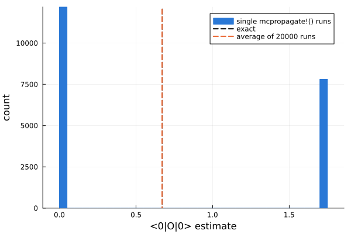
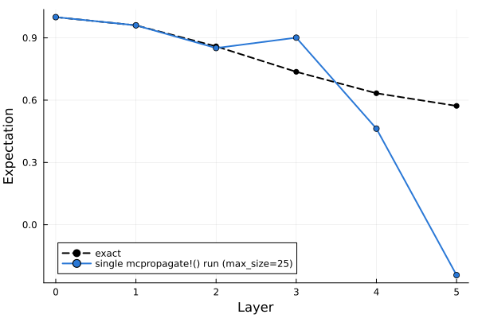
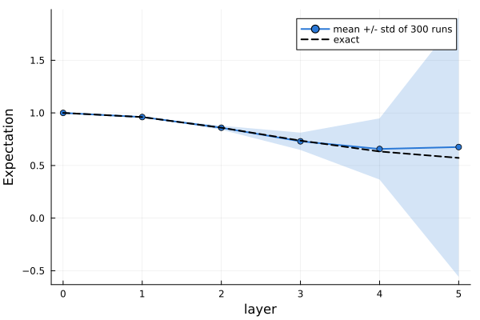
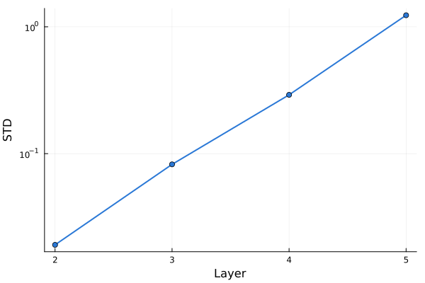
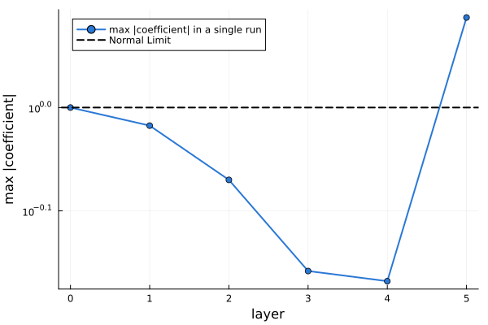
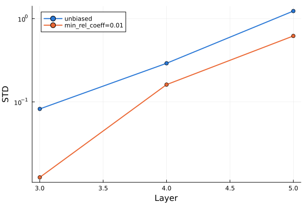
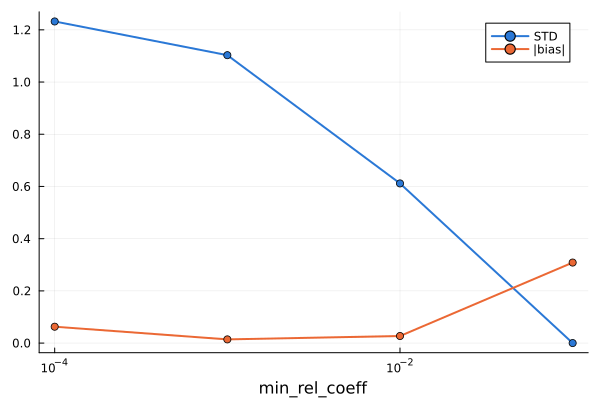

Monte Carlo Propagation
What do we do when conventional Pauli propagation runs out of memory? We introduce a randomized strategy to go beyond memory limitations. Each simulation is not fully accurate, but we can average expectation values over many, independent simulations.
mcpropagate() and its in-place variant mcpropagate!() let you perform propagation as usual, but when the number of Paulis exceeds a max_size, the coefficient distribution is resampled to a lower number in an unbiased manner.
This notebook looks at what that trade-off actually looks like in practice: unbiased in expectation, but with variance that compounds every time resampling happens, and coefficients that can end up wildly, unphysically large. We also look at trading some of that variance away for a small, permanent bias.
using PauliPropagation
using Plots
using Statistics
using Random
Random.seed!(24)A minimal example
Here is a minimal example circuit with two gates on two qubits. We also cap the Pauli sum to max_size=2.
nq = 2
circuit = [PauliRotation(:Y, 1), PauliRotation([:X, :X], [1, 2])]
thetas = [0.7, 0.5]
pstr = PauliString(nq, :Z, 1)
max_size = 2
exact_psum = propagate(circuit, pstr, thetas; min_abs_coeff=0.0)
exact_overlap = overlapwithzero(exact_psum)
println("Exact Pauli sum:")
println(exact_psum)
println("Exact expectation = ", exact_overlap)Exact Pauli sum:
PauliSum(nqubits: 2, 3 Pauli terms:
0.47943 * YX
0.67121 * ZI
-0.56535 * XI
)
Exact expectation = 0.6712121661589577Three terms survive exact propagation. Now compare that to single calls of mcpropagate!, capped at only 2 terms:
function toy_run()
psum = VectorPauliSum(pstr)
mcpropagate!(circuit, psum, thetas; max_size)
return overlapwithzero(psum)
end
for _ in 1:5
println(toy_run())
end0.0
0.0
0.0
1.7159919131443044
0.0Every individual run over- or under-shoots because we are trying to unbiasedly represent 3 Pauli strings with only with 2. But mcpropagate! is built so that each run is an unbiased estimator: averaged over many independent runs, the stochastic uncertainty cancels out.
reps = 20_000
samples = [toy_run() for _ in 1:reps]
println("Average of $reps runs: ", mean(samples))
println("Exact value: ", exact_overlap)
histogram(samples, bins=40, label="single mcpropagate!() runs", xlabel="<0|O|0> estimate", ylabel="count", color="#2a78d6", linecolor="#2a78d6")
vline!([exact_overlap], label="exact", color=:black, linewidth=2, linestyle=:dash)
vline!([mean(samples)], label="average of $reps runs", color="#eb6834", linewidth=2, linestyle=:dash)Average of 20000 runs: 0.6699232428915364
Exact value: 0.6712121661589577
A more realistic circuit
The same idea on a small Trotterized tilted-field Ising circuit on a 3x3 grid (9 qubits). We track a two-qubit ZZ expectation value over a handful of Trotter layers, capping the ensemble far below what it would naturally reach so that the resampling effects are easy to see.
nx, ny = 3, 3
nq = nx * ny
dt, h, J = 0.1, 1.0, 0.5
topology = rectangletopology(nx, ny)
layer = PauliRotation[]
rxlayer!(layer, nq)
rzlayer!(layer, nq)
rzzlayer!(layer, topology)
thetas = ones(countparameters(layer)) * dt * 2
thetas[getparameterindices(layer, PauliRotation, [:X])] .*= h
thetas[getparameterindices(layer, PauliRotation, [:Z])] .*= h
thetas[getparameterindices(layer, PauliRotation, [:Z, :Z])] .*= J
pstr = PauliString(nq, [:Z, :Z], [4, 5])
nlayers = 5
max_size = 25As ground truth, propagate deterministically layer by layer, with only a negligible coefficient truncation to keep the exact sum from exploding in size:
ref_psum = VectorPauliSum(pstr)
ref_overlaps = [overlapwithzero(ref_psum)]
for l in 1:nlayers
propagate!(layer, ref_psum, thetas; min_abs_coeff=1e-8)
push!(ref_overlaps, overlapwithzero(ref_psum))
end
println("Exact Pauli terms after $nlayers layers: ", length(ref_psum))
println("Exact overlaps per layer: ", round.(ref_overlaps, digits=4))Exact Pauli terms after 5 layers: 105012
Exact overlaps per layer:
[1.0, 0.9605, 0.8592, 0.7366, 0.6333, 0.5723]The (near) exact sum already reaches tens of thousands of terms after a few layers. mcpropagate! instead keeps a running Pauli sum and resamples it back down to max_size terms whenever it grows past that cap - orders of magnitude smaller than the exact sum, so a lot of resampling happens along the way. A single run tracks the exact curve loosely at best:
function mc_trajectory(; min_rel_coeff=nothing)
psum = VectorPauliSum(pstr)
overlaps = [overlapwithzero(psum)]
maxcoeffs = [maxabscoeff(psum)]
for l in 1:nlayers
mcpropagate!(layer, psum, thetas; max_size, min_rel_coeff)
push!(overlaps, overlapwithzero(psum))
push!(maxcoeffs, maxabscoeff(psum))
end
return overlaps, maxcoeffs
end
single_overlaps, single_maxcoeffs = mc_trajectory()
plot(0:nlayers, ref_overlaps, label="exact", color=:black, linestyle=:dash, linewidth=2, marker=:circle, xlabel="Layer", ylabel="Expectation", legend=:bottomleft)
plot!(0:nlayers, single_overlaps, label="single mcpropagate!() run (max_size=$max_size)", color="#2a78d6", linewidth=2, marker=:circle)
Averaging many runs
A single run is noisy, but on average, the runs are unbiased at every such that their mean should track the exact curve. Notice, though, how much the spread (standard deviation) across runs grows with circuit depth: each extra resampling step compounds the noise carried over from the last one.
reps = 300
all_runs = [mc_trajectory()[1] for _ in 1:reps]
mc_mean = [mean(r[l] for r in all_runs) for l in 1:nlayers+1]
mc_std = [std(r[l] for r in all_runs) for l in 1:nlayers+1]
plot(0:nlayers, mc_mean, ribbon=mc_std, label="mean +/- std of $reps runs", color="#2a78d6", linewidth=2, marker=:circle, fillalpha=0.2, xlabel="layer", ylabel="Expectation")
plot!(0:nlayers, ref_overlaps, label="exact", color=:black, linestyle=:dash, linewidth=2)
The growth in standard deviation on its own, on a log scale:
plot(2:nlayers, mc_std[3:end], yscale=:log10, label="", color="#2a78d6", linewidth=2, marker=:circle, xlabel="Layer", ylabel="STD")
Corrupted coefficients
The variance blow-up comes directly from the unbiased resampling. Every coefficient that is not dropped needs to be re-scaled up in magnitude. If you repeat this over and over, all coefficients will eventually be very large, even though on average they should give you back the correct expectation.
plot(0:nlayers, single_maxcoeffs, yscale=:log10, label="max |coefficient| in a single run", color="#2a78d6", linewidth=2, marker=:circle, xlabel="layer", ylabel="max |coefficient|")
hline!([1.0], label="Normal Limit", color=:black, linestyle=:dash, linewidth=2)
Trading noise for bias via truncations
mcpropagate! also accepts the usual deterministic truncation keywords that propagate! does, e.g. min_abs_coeff, min_rel_coeff, or max_weight. Because coefficients tend to grow via unbiased resampling, we actually prefer min_rel_coeff over min_abs_coeff, but you can test things out.
A bit of deterministic truncation keeps introduces a bit of deterministic error with the benefit of strongly reducing the STD and generally the growth of the coefficients. If we are careful about it, we can find nice trade-offs.
min_rel_coeff = 0.01
all_runs_biased = [mc_trajectory(; min_rel_coeff)[1] for _ in 1:reps]
mc_mean_biased = [mean(r[l] for r in all_runs_biased) for l in 1:nlayers+1]
mc_std_biased = [std(r[l] for r in all_runs_biased) for l in 1:nlayers+1]
plot(3:nlayers, mc_std[4:end], yscale=:log10, label="unbiased", color="#2a78d6", linewidth=2, marker=:circle, xlabel="Layer", ylabel="STD")
plot!(3:nlayers, mc_std_biased[4:end], label="min_rel_coeff=$min_rel_coeff", color="#eb6834", linewidth=2, marker=:circle)
The bias-variance trade-off
Sweeping over min_rel_coeff shows you what trade-off to expect. Low truncations are pretty much unbiased, but have high variance. High truncations are biased, but have low variance. Somewhere in between is a sweet spot that minimizes the error for a fixed number of repetitions.
min_rel_coeffs = [1e-4, 1e-3, 1e-2, 1e-1]
reps_sweep = 500
biases = Float64[]
stds = Float64[]
for mrc in min_rel_coeffs
mrc_arg = mrc == 0.0 ? nothing : mrc
sweep_samples = [mc_trajectory(; min_rel_coeff=mrc_arg)[1][end] for _ in 1:reps_sweep]
push!(biases, abs(mean(sweep_samples) - ref_overlaps[end]))
push!(stds, std(sweep_samples))
end
plot(min_rel_coeffs, stds, label="STD", color="#2a78d6", linewidth=2, marker=:circle, xlabel="min_rel_coeff", xscale=:log10)
plot!(min_rel_coeffs, biases, label="|bias|", color="#eb6834", linewidth=2, marker=:circle)
Summary
mcpropagate is effectively propagate with a randomized protocol that kicks in once the number of Paulis crosses your defined threshold. Left unbiased, statistical noise quickly build up across layers, giving you expectation estimtates that are completely off. Mixing in a bit of deterministic truncation keeps the variance in check, but also introduces a bias that averaging cannot eliminate. The recommended approach is to start with a lot of truncation / bias, and slowly reduce it until you the STD becomes so large that you won't have enough resources to average it down. That gives you the least biased result you can converge.